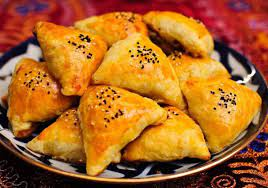
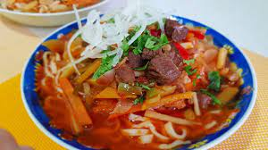
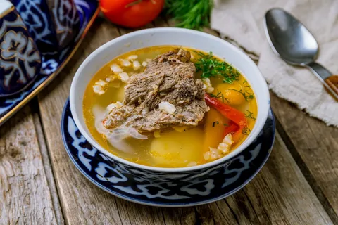

| 1.Lagmon | 2.Somsa | 3.Shorva |
| Somsa tayyolash | |
|  |
|
| Lagmon tayorlash | |
|  |
|
| Shorva tayorlash |  | 1. Suyakli qo'y go'shti sho'rva uchun eng to'g'ri tanlov. Go'shtni o'rtacha kattalikda bo'laklarga bo'ling va yuving. 2. Qozonga quyilgan sovuq suvga go'sh bo'laklarini tushuring va qaynash darajasiga olib boring. Qaynashni boshlab, ko'pik hosil bo'lishni boshlashi bilan bir chimdim tuz soling. Ko'pikni terib oling. So'ng, halqa yoki yarim halqa shaklida to'rg'algan piyozni soling. 30 daqiqaga, past olovda qaynatishga qoldiring. |